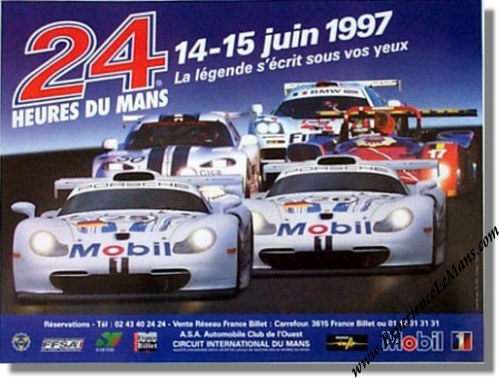
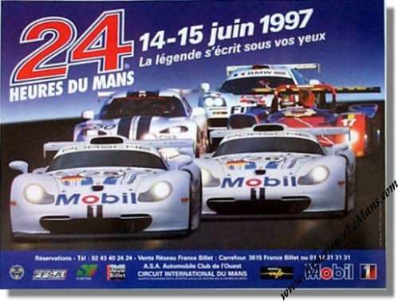

Michele didn't win as much as he deserved.
5 Victories in Formula 1, the European Formula 3 Championship,
and especially the 24 Hours of Le
Mans in 1997, were the Highlights of his Career
The best
year in Formula 1 was in the 1985 World Championship. When he was in the lead for most of the season, he had
to retire 4 times in the last 5 Races for Engine and Turbo failures
The Dunlop chicane was modified slightly in order to slow speeds again but also accommodate larger gravel traps as runoff area for the protection of motorcycle riders using the Bugatti Circuit. Frenchman Sébastien Enjolras lost his life in a pre-qualifying accident in his Welter Racing WR LM97-Peugeot.
in this edition a large group of GT1 cars is competing for the victory of the race against a small number of LMP prototypes, this comparison is made possible by the technical standards in force: they allow the GT1 powers of over 600 HP, a minimum weight of 950 kg and a 100-liter fuel tank; the prototypes, on the other hand, have a power of about 550 hp, the minimum weight is 850 kg and the petrol tank has a capacity of 80 liters.
After the start of the race, the two official Porsche GT1s take the lead, pursued in the early stages by the TWR-Porsche; after just over an hour the Ferrari 333 Sp # 4 runs out of petrol, after 2 and a half hours the official McLaren # 42 of the BMW Motorsport team loses 32 minutes in the pits due to a loss of water from the engine. The Nissans suffer from overheating problems in the gearbox and are forced to several stops in the pits for repairs, the two R390 GT1s driven by the fastest crews both retire shortly after 04:00 in the morning after a few minutes, due to gearbox breakage.
Shortly before 08:00, an accident takes away the car that was leading the race, which trivially goes off the track at Curva Arnage without being able to start again: what at first seemed to be a serious mistake by the expert Bob Wollek will be discovered - years later - to have been caused by a failure of the differential of his official 911 GT1.
# 25 JJ Letho while driving the McLaren F1 # 42 makes a head and tail at the Mulsanne corner and hits the wall, despite returning to the pits the car is not repairable. Four hours from the end, the # 26 Porsche 911 GT1 leads the race 2 laps ahead of the pursuing TWR-Porsche, followed by three McLaren F1 cars. When there are just over 2 hours to the end of the race, a twist happens, the Porsche 911 GT1 # 26 driven by Ralf Kelleners, who had been leading the race for 5 hours now, suddenly stops near the back of Mulsanne with the broken engine, the driver quickly descends while the car catches fire. A few minutes later the McLaren # 39, which occupied the 4th position, also stopped almost at the same point where the Porsche caught fire, due to similar technical problems. The TWR-Porsche of the crew Michele Alboreto, Stefan Johansonn, and Tom Kristensen, wins the race, in 2nd and 3rd place two McLaren F1 GTRs, the first of the GTC Motorsport team and the second of the BMW Motorsport team.
Michele Alboreto-(# 7 TWR Porsche)
Tom Kristensen-(# 7 TWR Porsche)
Stephan Johansson(# 7 TWR Porsche)
Michele Alboreto# 7 TWR Porsche Racing - 3: 41.581
Tom Kristensen # 7 TWR Porsche - Joest Racing - 3: 45.068 on lap 210
 


{kind=link}
{kind=link}
.jpg){kind=link}
.jpg){kind=link}
.jpg){kind=link}
.jpg){kind=link}